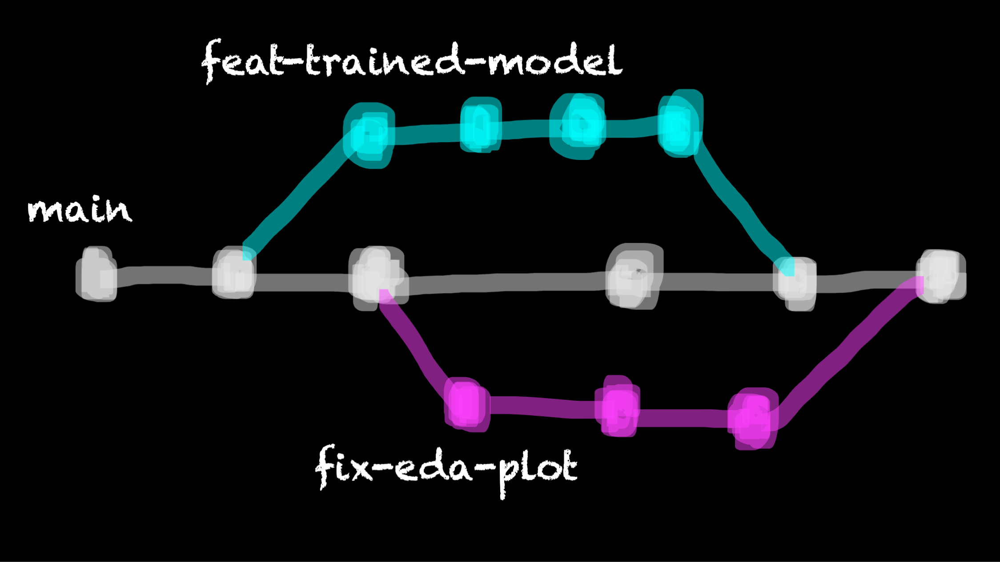

Version control (for transparency and collaboration) II#
Topic learning objectives#
By the end of this topic, students should be able to:
Describe what branches are in Git and explain why they are useful for collaboration.
Explain the two most common Git branching strategies (Git flow and GitHub flow) and list their advantages and disadvantages.
Use Git to create new branches, switch between branches, merge branches locally, and use GitHub pull requests to bring new changes into the projects default branch.
Use GitHub’s pull requests tool to perform code reviews.
Git Branches#
Branches allow you to have a playground for developing and testing new additions to your code, as well as fixes. This playground lets your explore, experiment and test in a safe place - away from others that might be using or depending on the current version of your code. This is perhaps more obviously useful if your project is deployed and has users (e.g., a data visualization dashboard, an R or Python package, a phone app, etc), but this can also be useful for code that make up a data analyses. As, in addition to the reasons stated above for branching, branching also lets you organize units of work into smaller, more manageable chunks that are easier for collaborators to check over and review.
Once the new code additions or fixes have been finalized in their branch playground, they can be merged back to the main code-base. Several branch playgrounds can co-exist, one for each new code addition or fix being worked on. This allows for parallelization of work!
We can use a construction of a house as a metaphor for this kind of development. First, you need to build the foundation. Since everything depends on the foundation being built, this would be developed on the main branch. When the foundation is finished, the construction of other parts of the house that don’t depend on each other could take place in parallel, e.g. some contributors might start working on the walls and others on the floor. When either of these features is finished, it can be added back to the house (merged into main). When depicted graphically, this process would look something like this (each dot is a commit).

A more realistic Git branching example for a data analysis project might look something like this:
{kind=link}
Creating a branch using the command line#
In the terminal, and in the working directory of the project in which you wish to create a branch,
use git switch with the -c flag and specify the branch name.
This create a new branch and immediately switch to it.
For example, to create a branch named patch-docs
(a good branch name if we were planning on working on a fix
in the project’s documentation),
we would type:
git switch -c patch-docs
To ask Git what branches now exist and to see where we are,
we can use the branch command with the -v flag
(for “verbose”, meaning tell us everything!):
git branch -v
And we should see something like the output shown below, which lists the branch names in the first column, the SHA of the last commit on each branch in the second column, and the commit message associated with the last commit in the third column:
main f756bbb initial
* patch-docs f756bbb initial
As you work here on this new branch, you can commit your changes to version control locally, and even push your changes to the remote repository. All the changes however will live only on that branch until you do something to move them to another branch. When you want to start discussing your changes with your collaborators to start the process of bringing these changes into the main branch (main code-base) you typically create what is called a pull request. A pull request is a like an asking your collaborators “is it OK to merge my code?” Usually there will be some discussion and a few more revisions to the code, but eventually they will give you the thumbs up when everything looks good and the code can then be merged. We will discuss this more next.
Switching to branches that already exist#
After you have been working on your new brain for some time,
you will eventually want to get back to the project’s default branch,
or some other branch.
To do this, we use git switch <branch_name>.
Note that we do not use the -c flag this time, as we are not creating a new branch.
Getting remote branches you did not create locally#
If your collaborator creates a branch that you want to
run or test locally, but it only exists on the remote repository
you have to tell Git to fetch (go get it) for you first,
before you can switch to it.
You can specify which branch you specifically want to grab,
but for simplicity it is often easy to ask Git
to fetch all of them for you, using the fetch command
with the --all flag:
git fetch --all
Useful command line Git branching commands#
Below is a table of the most commonly used Git commands for branching. This table includes the commands we presented above as well as the a few other useful ones.
Description |
Command |
|---|---|
list all local branches |
|
create a new branch & immediately switch to it |
|
switch to a branch |
|
fetches all changes to all branches |
|
retrieve a branch you don’t have locally on your laptop from GitHub |
|
merge changes from another branch |
|
delete a local branch |
|
push changes to a remote branch |
|
Exercise#
Make your own copy of this GitHub repository by clicking the green “Use this template” button. And then clone your copy of the repository to your computer.
Create a new branch named
better_error_msgin the local repository using Git.On that branch, fix the
sqrt.pyso that if you run this script with a negative number as an argument you do not get an difficult to understand error, but instead throw a helpful exception informing the user that the number should be positive. Fix to add tosqrt.py:
if number < 0:
raise Exception("n should not a positive number")
Add and commit those changes.
Switch back to the
mainbranch and look at thesqrt.pyfile - do you see the change there?Switch back to the
better_error_msgbranch - do you see the change there?Push your change to the remote GitHub repository, and see where you can find it there!
Note: if you use the Git command line tool and get an error message like the one shown below, this is because you did not state the remote (usually it is
origin). Try pushing again usinggit push origin <branch_name>fatal: The current branch better_error_msg has no upstream branch. To push the current branch and set the remote as upstream, use git push --set-upstream origin better_error_msg To have this happen automatically for branches without a tracking upstream, see 'push.autoSetupRemote' in 'git help config'.
Creating a pull request#
To create a pull request, you first need to ensure all the local changes you made on the new branch are also available on the remote repository (i.e., you need to push them). Once that has happened you need to go to the remote GitHub repository, as pull requests are created from there.
GitHub often tries to be helpful when a change is pushed to a new branch that doesn’t yet exist on the default branch by showing you a yellow banner listing any recently pushed branches.

To create a pull request, you click the green button “Compare & pull request”. In the new page, add a message to describe the changes you have made, scroll down to review the changed files, and the click the green button that reads “Create pull request”. If you are working together in a team, you could also designate certain team members to review your work and assign relevant labels, via the right hand side panel.
The next step is for a collaborator to review your work and merge it in if they approve it.
Exercise#
Use the green “Compare & pull request” button on the yellow banner to open a pull request.
Go to the “Pull requests” tab on the remote GitHub repository and explore the “Conversation” and “Files changed” sub-tabs there.
Code reviews using in-line comments and suggested code fixes#
In the project, you are expected to read and review eachother’s code BEFORE accepting a pull request.
Do not expect all (or even most) pull requests to be perfect in their first submission.
We very often need to have a conversation to get pull requests into good shape before merging into master, and GitHub has a very nice tool we can utilize to do this: GitHub code reviews
{kind=link}
Demo: do a code review:#
I am going to demo a code review of a pull request. I have set-up a template GitHub repository for you so that you can easily generate a pull request for you to review if you want to try this later.
Steps:#
Click the green “Use this template” button in this repository to obtain a copy of it for yourself (do not fork it).
Create a remote branch named
pr(this will use GitHub Actions to create a pull request for you to review in this repository).Click on the Pull Requests tab of your copy of the repository, click on the pull request titled “Report most accomplished pilots”, and then click on “Files Changed”. Next click on the
star-wars.Rmdfile. Review the file and observe the following problems with the R Markdown report that was submitted via the pull request:
Reasoning of the sentence on line 15
Incompatibility with the sentence on line 15 with the code in the code chunk named
table-of-most-accomplished-pilotsIncorrect code in code chunk named
table-of-most-accomplished-pilots(unestedfilminstead ofstarships) leads to naming the wrong pilot as the most accomplished pilot on line 19Incorrect code in code chunk named
table-of-most-accomplished-pilots(unestedfilminstead ofstarships) leads to the use of the wrong character’s picture in the image that is sourced in the code chunk namedtop-pilot(it should be a picture of Obi-Wan Kenobi, you could use this URL for example: https://hips.hearstapps.com/hmg-prod.s3.amazonaws.com/images/ewan-mcgregor-obi-wan-1570898048.jpg).
{kind=link}
Add comments and suggested changes using the
+sign beside the line numbers (the first time you do this will trigger the start of your code review. Need help? See GitHub’s how to on reviewing proposed changes in a pull request.After you have made all the comments and suggested changes, then add a general comment for the code review, select “Request Changes” and submit your code review.
Demo: Accept suggested changes from a code review:#
Steps:#
To accept the code changes that you provided as suggestions, revisit the Pull Requests tab of your copy of the repository and clicking on the pull request titled “Report most accomplished pilots”. Scroll through the pull request comments and find the code suggestions. Then click on the “Commit suggestion button” for each suggestion.
Click on the “Show all reviewers” link beside the red “Changes requested”” text. Then click on the
...beside the reviewer and click “Approve changes”.Finally click on the green buttons (“Merge Pull Request” & “Confirm merge”) to merge the pull request.
Discussion:#
Could I have done the entire code review well by just reviewing it on GitHub?
Hint: if I didn’t tell you that the top pilot was Obi-Wan Kenobi, how would you have known that?
Useful things you can do with branches on GitHub#
Create a new branch:

Source: UBC-DSCI/introduction-to-datascience
View all branches and their status:

Source: UBC-DSCI/introduction-to-datascience
And delete remote branches:

How do you not accept a pull request?#
In some cases, it might not make sense to merge a pull request. To close a pull request that should not be merged, scroll to the bottom of the pull request page, and look for a gray “Closes pull request” button. This will end move the pull request to the closed pull requests section (similar to closed issues) and does not merge the changes.

Git and GitHub flow#
Branching generally works well if a team agrees to and follows a consistent workflow. The two leading workflows used in industry are Git flow and GitHub flow. We will describe and discuss both here so you are aware of both, and we will employ GitHub flow in our projects for this course.
GitHub Flow#
Key features:
A single “main” branch that also serves as the deployment branch, we call this main.
Every new contribution is done on a new branch (with a meaningful name) created from main.
Contributions from that new branch are sent back to main by means of a pull request, which ideally is reviewd & tested before merging.
(note: at the time this figure was made, the default branch on GitHub as still called the master branch)

Source: https://blog.programster.org/git-workflows
Git Flow#
Key features:
Two “main” branches that last forever, main for deployment and develop where things are tested before they are released to main.
Three supporting branches: feature, release & hotfix. Both feature & release branches are created from develop. feature branches should be merged into develop before they are incorporated into a release. release branches eventually get merged into main after adequate review and testing.
(note: at the time this figure was made, the default branch on GitHub as still called the master branch)

Source: https://blog.programster.org/git-workflows
Discuss:#
What do you think are pros & cons of each of these branching workflows?
Relevance to course project:#
You will be expected to work using the GitHub flow workflow for your projects in this course.
What happens when my feature branch falls behind main?#
How to catch up a branch that has fallen behind the
mainbranch using the command line:
run
git pull origin mainto pull any changes from the remote version of main that we might not haverun
git switch <branch>to make sure we are on the branch we want to catch uprun
git merge mainto merge the changesrun
git push origin <branch>to push our updated branch to the remote
Next:#
file and directory structure for data analysis projects
integrated development environments for data science